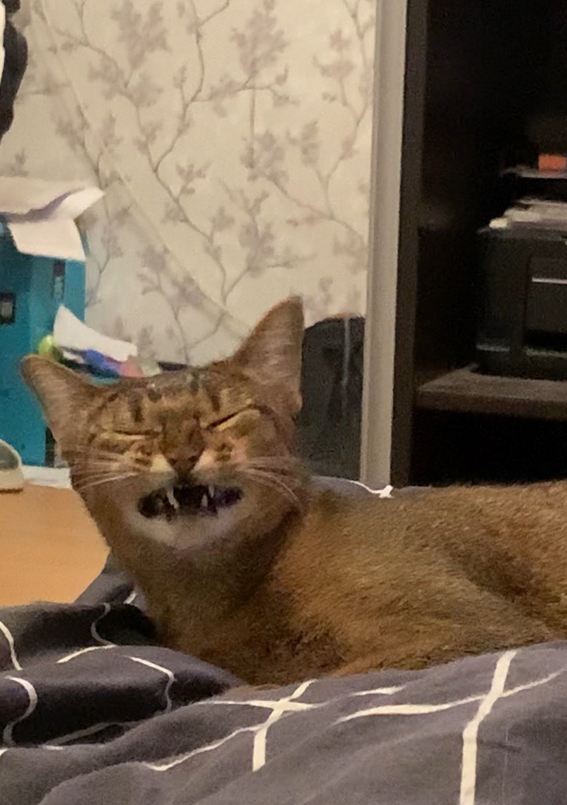
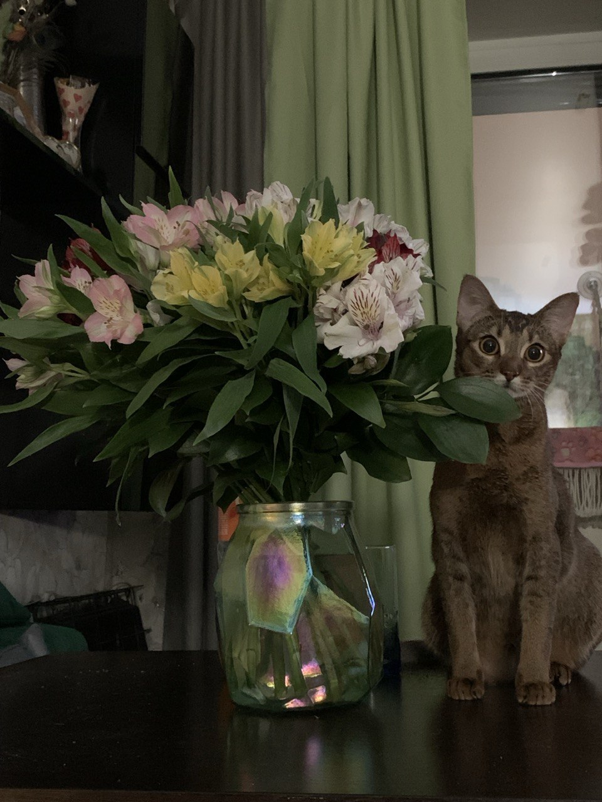
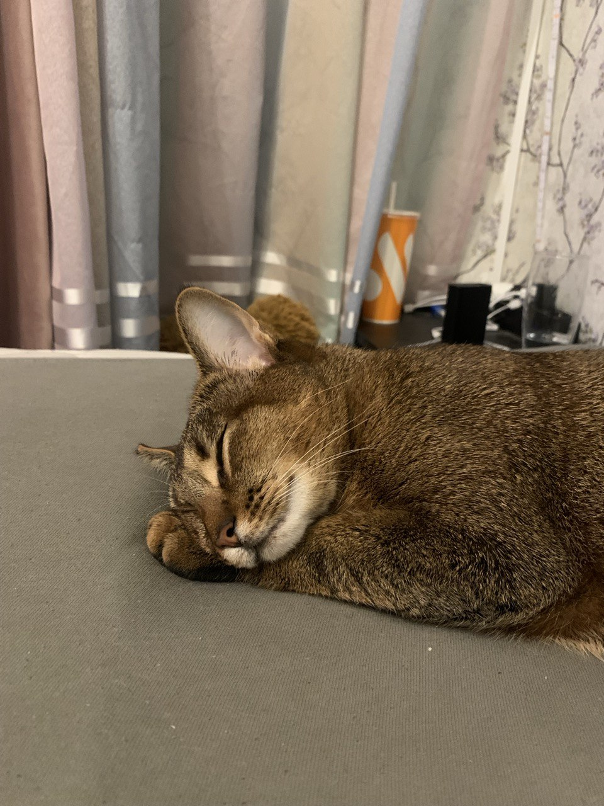
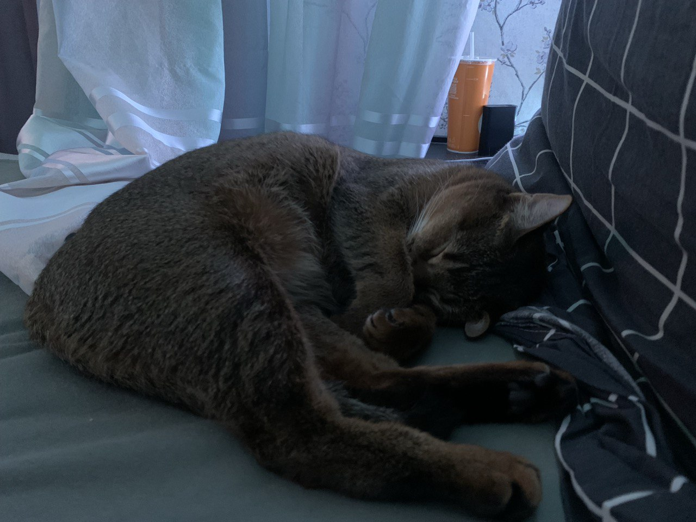
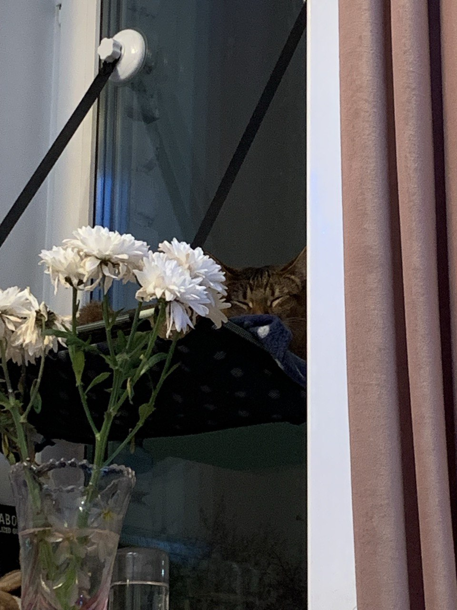
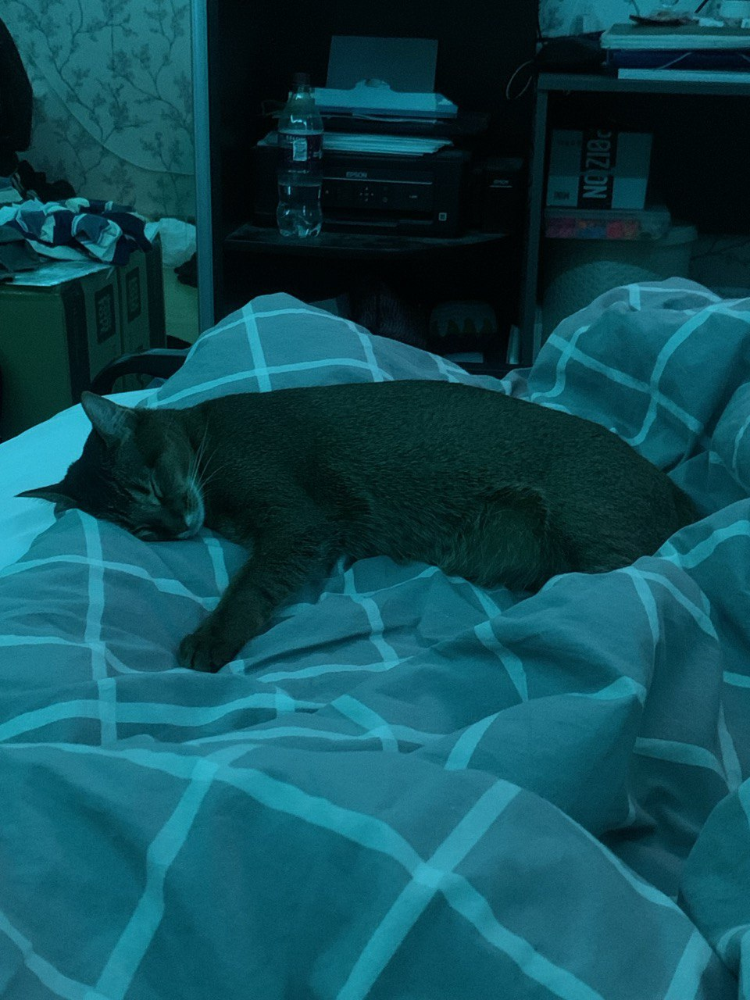

-
Фритрек и нулевой спринт: Подготовка к работе
</HTML>Это было самое начало пути. На этом этапе важно было проникнуться основами и настроиться на учёбу. И, возможно, подумать, как новые знания могут повлиять на ваше будущее.
В июне я закончила учебу в колледже и начала задумываться: "А что же делать дальше". Мне очень нравилось web-программирование, и я решила развиваться в этом направлении.
Когда открылся доступ к первой теории предстояло освежить знания и еще раз убедиться, что я выбрала верное направление).
-
1 спринт: Я — чистый лист
 </HTML>На первых этапах мы работали со страхами и сомнениями, которые часто испытывают новички. Один из них — страх перед чистым листом. Это, конечно же, намного сложнее, чем боязнь куска бумаги. Часто за этим ощущением скрываются более глубокие вопросы: с чего начать? а вдруг будет слишком сложно? что, если я не справлюсь?
Честно, даже не знаю что написать ахахахах. Так как для меня это был уже не первый опыт, то было достаточно просто начать (что конечно не может не радовать).
-
1 спринт: А если не получится?
 </HTML>Первый проект — позади! Но это всё ещё самое начало пути. Радость могла быстро померкнуть и смениться ожиданием провала. Или вы, наоборот, могли вдохновиться успехами и поверить в себя.
Было очень здорово получить заветное сообщение "Ваша работа принята". Ревьюер по итогу написал большой комментарий в котором похвалил и пожелал удачи, отметил все достоинтва и недостатки, было здорово получить такой развернутый фидбек, и конечно, это придало уверенность в своих силах.
-
2 спринт: Погоня за идеалом
 </HTML>
</HTML>
На этом этапе вы уже достаточно разбирались в основах вёрстки, чтобы понять, как много ещё впереди. Вы могли попытаться погнаться за идеалом и понять, что он недостижим. А, может, вы вовсе и не подвержены перфекционизму и вместо того, чтобы сделать идеально, старались просто сделать.
Когда я проходила теорию 2 спринта поймала себя на мысли, что наконец-то в голове все становится по полочкам. Знания с колледжа это конечно круто, но все было так сумбурно, что понимания иногда не приходило. И именно с теорией на курсе я смогла все расставить по местам и пополнить уже имеющиеся знания.
-
2 спринт: О тех, кто рядом
 </HTML>Всё это время вы были не одиноки (хотя, возможно, иногда и чувствовали, что одни против целого мира). Вас окружали одногруппники, команда сопровождения и просто близкие люди, которым можно пожаловаться, если очередной макет просто так не поддавался. Осваивать что-то новое легче, когда рядом есть единомышленники, не правда ли?
И вот вторая работа засчитана, уверенности все больше, сомнений в своих действиях все меньше. Очень круто, что в любой момент можно задать свои вопросы в пачке, и тебе обязательно помогут.
-
3 спринт: Обходные стратегии
 </HTML>На этом курсе вы постоянно решали разные задачи. В какой-то момент вам могло показаться, что решения просто иссякли. Значит, пришло время посмотреть на задачу под другим углом.
Наверное 3 спринт дался труднее всего, и меня нагнал страх что ничего не получится. Сложности вызвало переключение тем, в голове так и возникали мысли: "А так вообще можно делать?", "У меня ужасный код", "У меня это точно не примут". Отправляя работу на ревью я вытирала испарину на лбу ахахахах.
-
3 спринт: Когда опускаются руки
 </HTML>Во время учёбы часто возникает чувство, когда не знаешь, за что хвататься. Вроде и проектную пора сдавать, и задачи хочется порешать, и в теории получше разобраться, и жизнь не забыть пожить. В такие моменты очень нужна концентрация. Вспомните, откуда вы её черпали.
После первой проверки тучи в голове развеялись и появилось четкое представление в чем ошибки и почему я их допустила. И после зачтения работы в моей голове загорелась ачивка "Ура, теперь я умею это делать".
В целом, если оглядываться назад, то никогда не было такого, что я заставляла себя сесть за теорию или проект. Теория расписана так подробно и интересно, что только в радость такое читать, а писать код еще интереснее.
-
«Сейчас я здесь»
 </HTML>Сейчас вы уже очень много знаете о вёрстке. Но это только начало. Во-первых, впереди ещё много материала про «красотищу». Во-вторых, с окончанием курса учёба не заканчивается. Вёрстка — это целый мир. И этот мир постоянно меняется. Познать его полностью не получится, но это тот случай, когда важен сам процесс познания. Ведь часто путь — и есть результат.
Я очень рада, что прошла этот большой блок и не появилось желания опустить руки или остановится, это может означать только одно - я на верном пути.